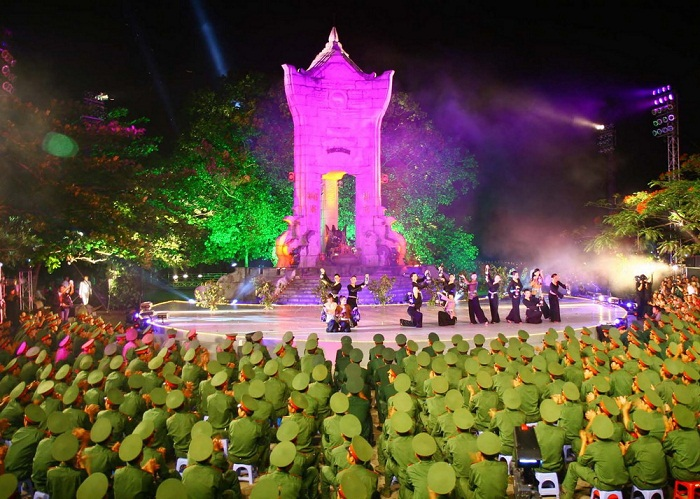

Lịch Sử Hào Hùng Của Quảng Trị
Quảng Trị là một vùng đất giàu truyền thống lịch sử và văn hóa, nằm ở miền Trung Việt Nam. Lịch sử của Quảng Trị bắt nguồn từ thời cổ đại, khi nơi đây thuộc về bộ Việt Thường của nước Văn Lang - Âu Lạc thời Hùng Vương. Sau đó, vào thời kỳ Bắc thuộc, Quảng Trị trở thành một phần của quận Nhật Nam dưới sự cai trị của nhà Hán. Đến thế kỷ II, khi nhà Hán suy yếu, vùng đất này thuộc về vương quốc Lâm Ấp, tiền thân của vương quốc Chăm Pa sau này.
Bước ngoặt lớn trong lịch sử Quảng Trị diễn ra vào năm 1069, khi vua Lý Thánh Tông cùng Lý Thường Kiệt đánh bại Chăm Pa và sáp nhập vùng đất phía Bắc Quảng Trị (châu Ma Linh, Địa Lý) vào lãnh thổ Đại Việt. Năm 1306, cuộc hôn nhân giữa công chúa Huyền Trân và vua Chế Mân của Chăm Pa đã đưa hai châu Ô - Lý (phía Nam Quảng Trị) về Đại Việt, mở rộng cương vực quốc gia.
Thời kỳ nhà Nguyễn, năm 1802, vua Gia Long lập dinh Quảng Trị, và đến năm 1832, dưới triều vua Minh Mạng, Quảng Trị chính thức trở thành một tỉnh. Trong thời kỳ Pháp thuộc, Quảng Trị trải qua nhiều lần thay đổi về hành chính, trước khi được tách thành tỉnh độc lập vào năm 1900.
Quảng Trị cũng là nơi chứng kiến nhiều sự kiện lịch sử quan trọng trong thời kỳ hiện đại. Trong Chiến tranh Việt Nam, Quảng Trị trở thành chiến trường ác liệt, nổi tiếng với trận đánh Thành cổ Quảng Trị năm 1972, nơi ghi dấu sự hy sinh anh dũng của quân và dân Việt Nam. Sau năm 1975, Quảng Trị được tái lập vào năm 1989 và tiếp tục phát triển, khẳng định vị thế là một vùng đất giàu tiềm năng kinh tế, văn hóa và lịch sử của đất nước.
Lễ Hội Văn Hóa Đặc Sắc Quảng Trị
Lễ hội thả hoa đăng trên sông Thạch Hãn
Dòng sông Thạch Hãn hoa đỏ cách đây 37 năm từng là nơi diễn ra chiến dịch bảo vệ thành cổ trong suốt 81 ngày đêm khốc liệt. Vào ngày 14 âm lịch hàng tháng hay vào các dịp lễ lớn của Quảng Trị nói riêng và các nước nói chung mọi người lại đến đây để thả đèn. Những chiếc đèn hoa đăng rực rỡ như là cách để tri ân và tưởng nhớ đến những người có công với đất nước. Không chỉ là lễ hội Quảng Trị của người dân nơi đây mà cũng được khách du lịch từ khắp mọi nơi yêu thích tham gia mỗi khi có dịp đến mảnh đất này.
Lễ hội thống nhất non sông
Trong những năm chiến tranh đôi bờ Hiền Lương - Bến Hải là nơi chứng kiến đất nước yêu thương bị chia cắt thành kẻ Nam người Bắc. Lễ hội diễn ra vào ngày 30-4 hàng năm, với mục đích tôn vình những giá trị lịch sử với các chiến thắng và những anh hùng đã ngã xuống hy sinh cho đất nước. Để tổ quốc được thống nhất, nhân dân được ấm no.
Lễ hội Trường Sơn

Hàng năm, vào ngày 27-7 tại các nghĩa trang của Quảng Trị trong đó lớn nhất tại nghĩa trang quốc gia Trường Sơn. Đây là hoạt động thường niên nhằm tưởng nhớ những liệt sĩ đã hy sinh cho độc lập của tổ quốc.
Cảnh Đẹp Thiên Nhiên Quảng Trị
Biển Cửa Tùng
Được mệnh danh là "Nữ hoàng của những bãi biển", Cửa Tùng nổi tiếng với bờ cát trắng mịn, làn nước trong xanh và những hàng phi lao rì rào trong gió. Đây là một trong những bãi biển đẹp nhất miền Trung.
Thác Chênh Vênh
Nằm trong khu bảo tồn thiên nhiên Đakrông, thác Chênh Vênh là một tuyệt tác của thiên nhiên với những thác nước hùng vĩ đổ xuống từ độ cao 50m, tạo nên khung cảnh kỳ vĩ giữa núi rừng.
Đảo Cồn Cỏ
Hòn đảo xinh đẹp này không chỉ có giá trị về mặt lịch sử mà còn sở hữu hệ sinh thái biển phong phú, những rạn san hô đẹp và bãi tắm hoang sơ.